DisCo alone vs DisCo + queen: who closes, and what hides under the AUC
QTHE QUESTION
Do the runs that close best also have healthy ABCD planes, and what does the AUC hide about them?
DTHE DATA
Recorded out-of-fold scores, nothing retrained. Endcap: 383 runs (R15, R16a). Barrel: 2,907 runs (R16). DisCo alone vs DisCo + QB, QDR, \(\hat\tau^2\). The 15 best and 15 worst runs per region, each with its full graph suite, plane-health card and five checks under the AUC.
CCONFIDENCE
Single runs, ranks from single-seed scans: the lists show what is possible, not what is typical. The (3) labels are provisional; two of their criteria are corrected on slide 18.
The worst closers are DisCo alone (endcap) or barely regularised runs (barrel). The best closers are DisCo + queen and have clearly healthier planes, including on the one check that does not reuse the ranking. Under the AUC, ordering is honest everywhere; NN2 stretch and saturation follow the QDR/\(\hat\tau^2\) arms, not closure.
R1 and R2 are the same ranking
|bias| and |pull mean| on the same grid move together, so the planned pairs of lists add nothing.
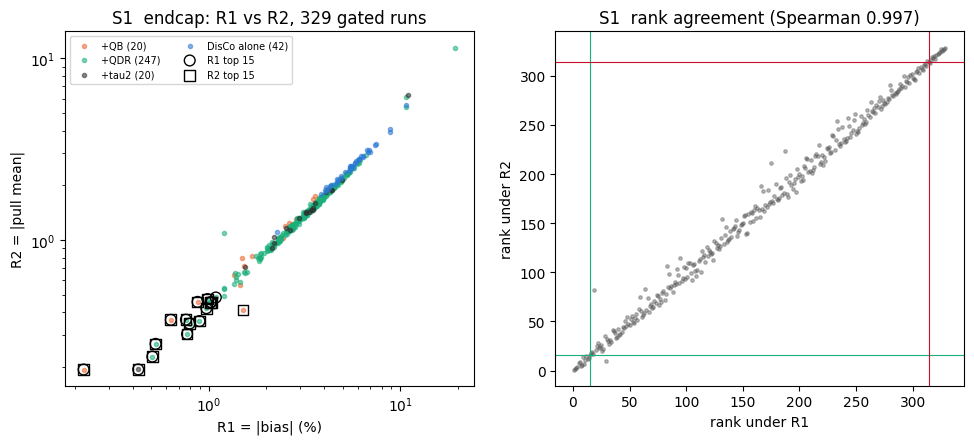

rank correlation, 329 runs
rank correlation, 1,088 runs
endcap · barrel
endcap · barrel
Endcap: ROC of the top 4
Best four runs by band bias (R1). NN1 left, NN2 right in each panel; red dot = WP. BCE only: AUC1 0.8793, AUC2 0.9912.
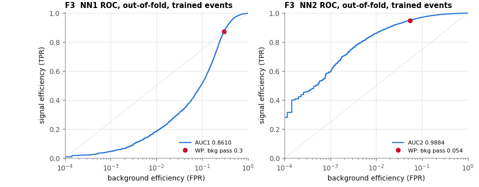
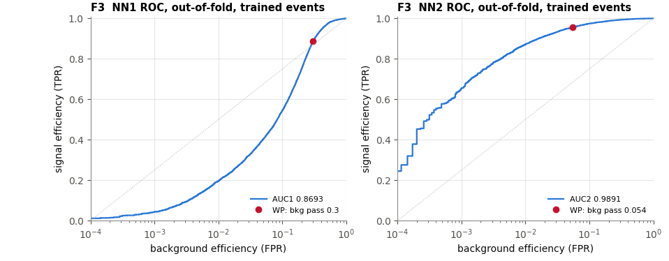

Endcap: ROC of the bottom 5
Worst five runs by band bias (B1 = worst). Same panels as the previous slide.

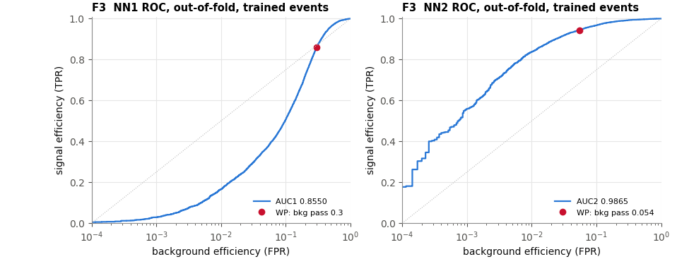
top 4: 0.8609–0.8709
bottom 5: 0.8550–0.8614
BCE only: 0.8793
The bottom 5 are not cheap runs: four are QDR / τ̂² at α 8–23 and one is DisCo α 27, all strongly regularised, all below the top 4 in AUC1. They pay in AUC and still miss closure.
Endcap: ABCD planes of the top 4
Raw NN1 vs NN2 scores, background | signal, events per bin on a log viridis scale, white = empty; red = WP cuts. 50×50 bins, 34,970 background events. Style after CMS ABCDisCoTEC (MLST 7, 045071), Fig. 6.
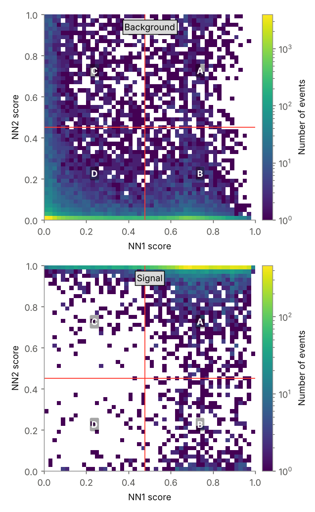
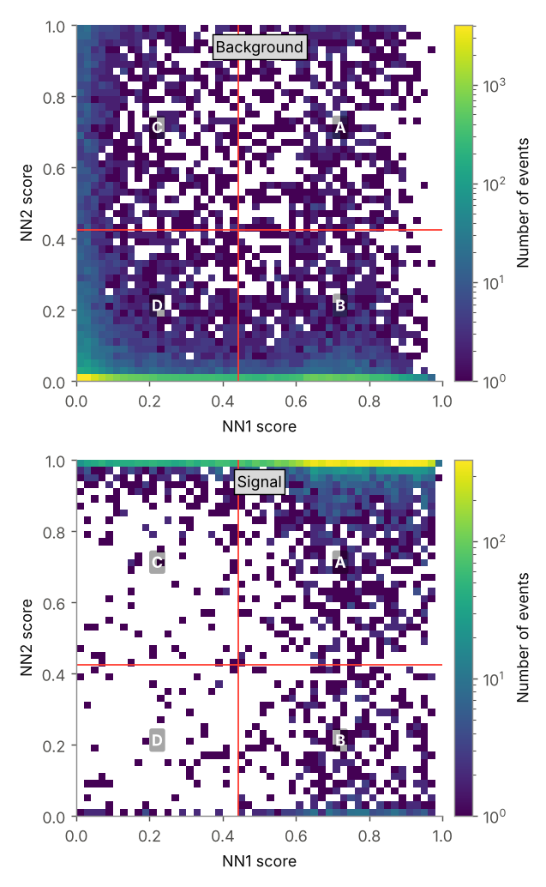
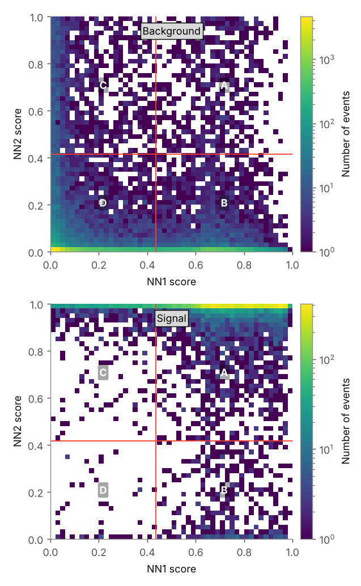

Endcap: ABCD planes of the bottom 5
Raw NN1 vs NN2 scores, background | signal, events per bin on a log viridis scale, white = empty; red = WP cuts. 50×50 bins, 34,970 background events. Style after CMS ABCDisCoTEC (MLST 7, 045071), Fig. 6.
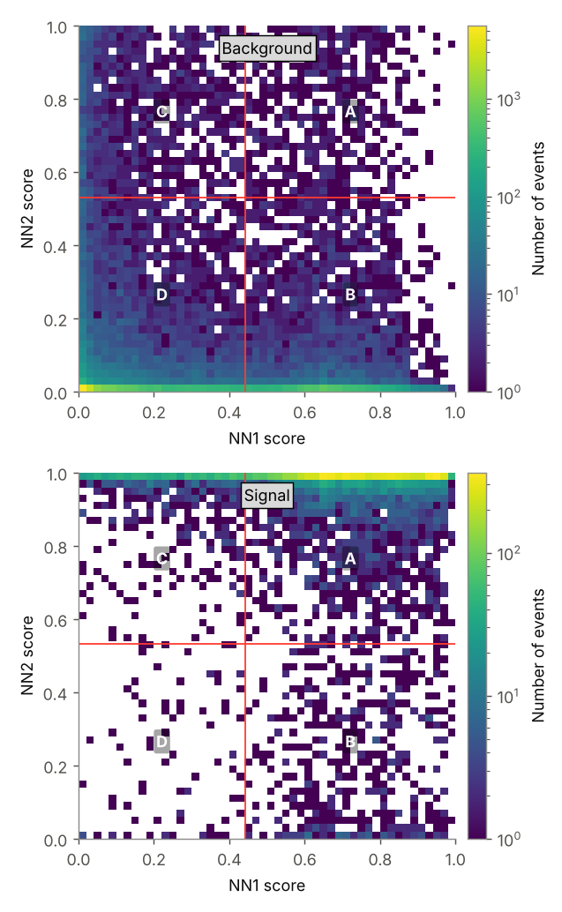
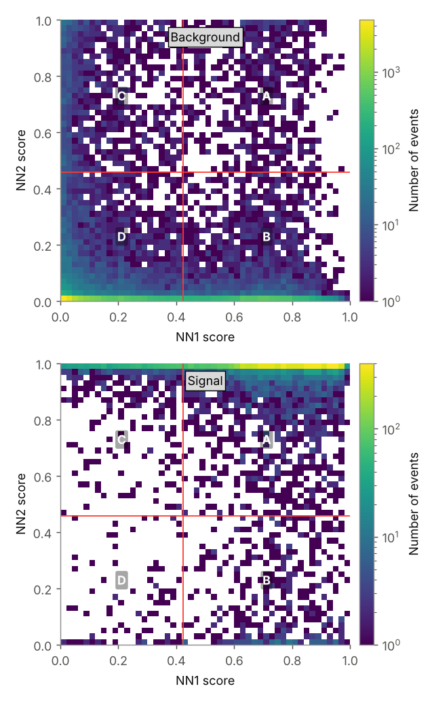
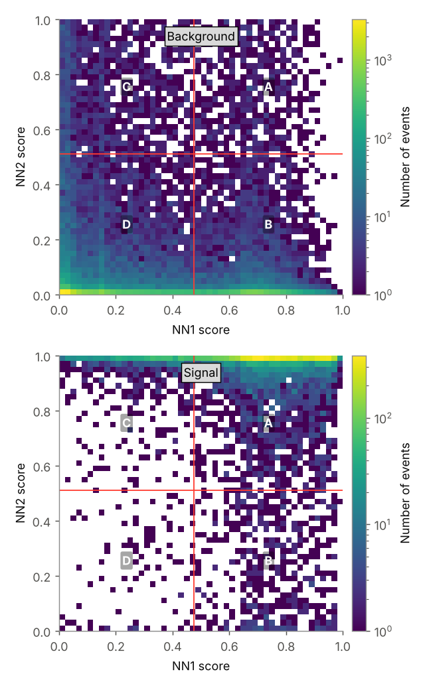

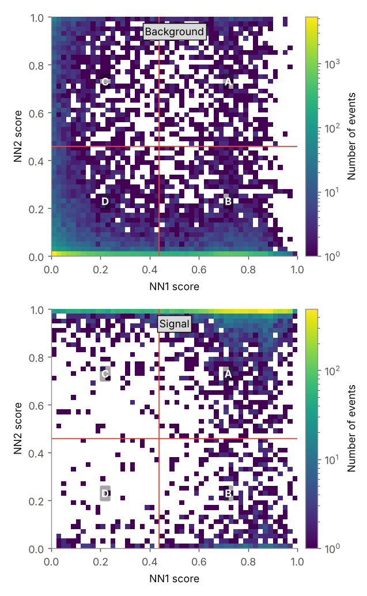
READ In every run, top and bottom, NN2 background sits in its lowest bin (score < 0.02) and signal in its highest: the AUC2 ≈ 0.99 split. That is why a linear colour scale shows nothing here, and why these panels use a log scale.
Barrel: ROC of the top 4
Best four runs by band bias (R1). NN1 left, NN2 right in each panel; red dot = WP. BCE only: AUC1 0.9076, AUC2 0.9629.
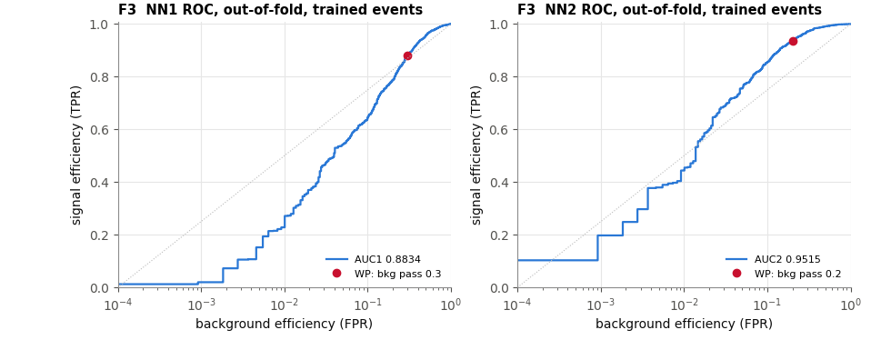

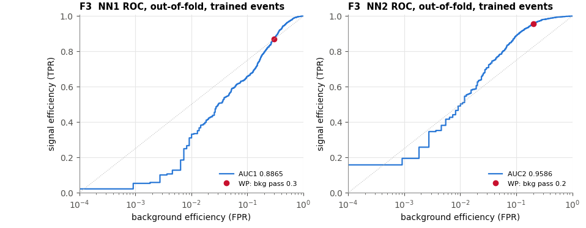
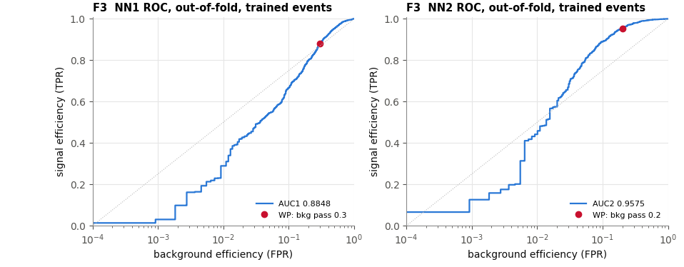
Barrel: ROC of the bottom 5
Worst five runs by band bias (B1 = worst). Same panels as the previous slide.

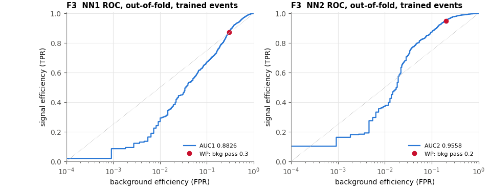


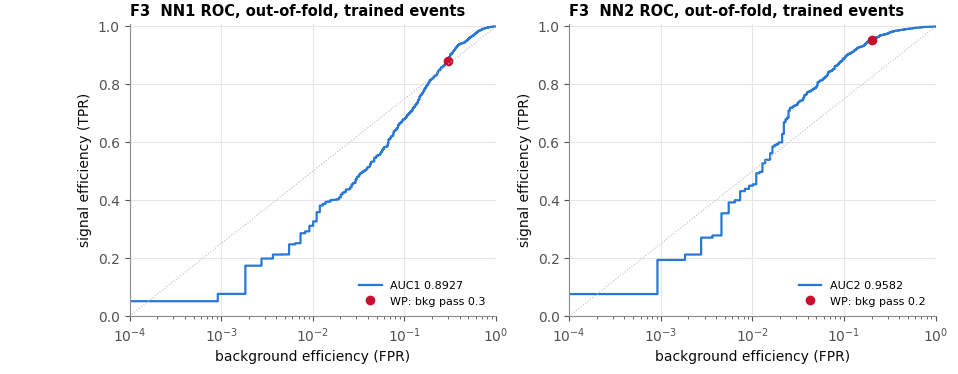
top 4: 0.8834–0.8865
bottom 5: 0.8826–0.9012
BCE only: 0.9076
B3–B5 are barely regularised (β ≤ 0.03) and keep AUC1 near 0.89–0.90. B1 and B2 are QDR at α 8.7 and 11.9 with AUC1 like the top 4: they miss closure without the AUC excuse.
Barrel: ABCD planes of the top 4
Raw NN1 vs NN2 scores, background | signal, events per bin on a log viridis scale, white = empty; red = WP cuts. 25×25 bins, 1,089 background events. Style after CMS ABCDisCoTEC (MLST 7, 045071), Fig. 6.

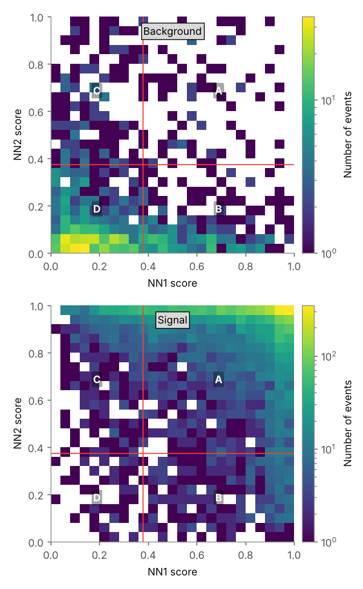
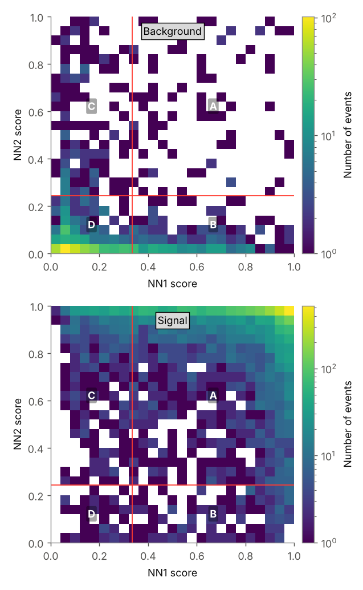

Barrel: ABCD planes of the bottom 5
Raw NN1 vs NN2 scores, background | signal, events per bin on a log viridis scale, white = empty; red = WP cuts. 25×25 bins, 1,089 background events. Style after CMS ABCDisCoTEC (MLST 7, 045071), Fig. 6.

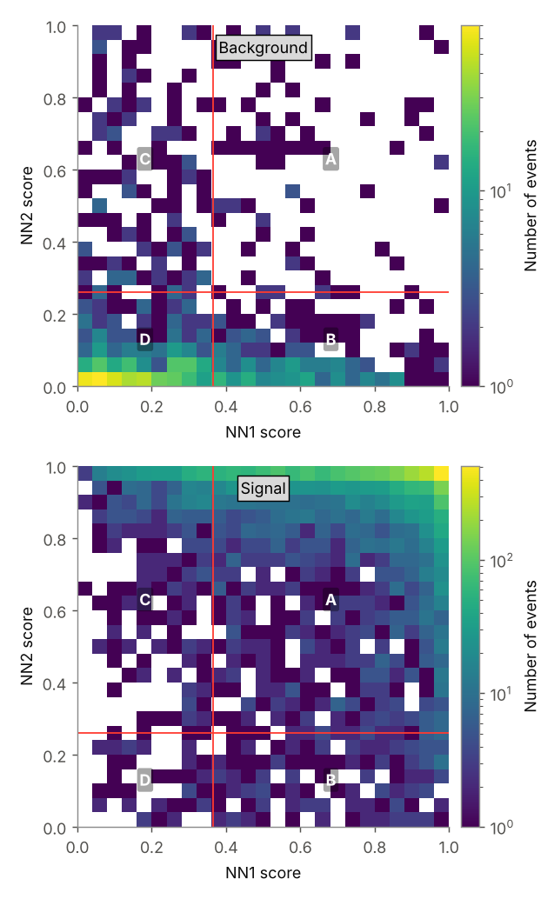
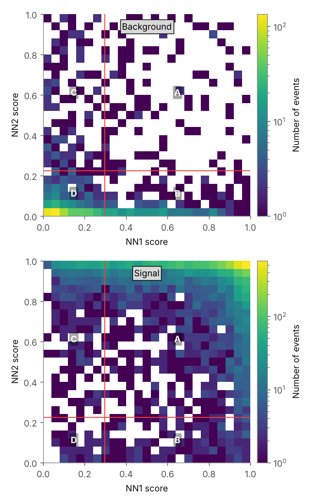


READ With 1,089 background events most bins hold 0–3 events; read the low-score corner where background concentrates, not single bins. Signal fills the upper NN2 band in all nine runs.
NN2 stretch and saturation follow the arm, not the closure
Same AUC2 (0.9889 top, 0.9896 bottom), very different NN2 background curves. The split is by queen type, in both lists.
| endcap runs, R1 lists | n | NN2 BKG LOGIT SPAN q 0.3–0.8 | BKG AT \(|z|>13.8\) | |BIAS| % |
|---|---|---|---|---|
| QB top 15 | 3 | 2.4–2.7 | 0 | 0.2–0.9 |
| QDR / τ̂² top 15 | 12 | 3.5–12.5 | 0–45 % | 0.4–1.1 |
| QDR / τ̂² bottom 15 | 5 | 8.6–10.5 | 20–34 % | 6.6–19.4 |
| DISCO bottom 15 | 10 | 2.8–3.0 | 0 | 6.4–10.8 |
Saturated scores tie in rank, so cut quantiles on NN2 sit on a plateau for these runs. Whether that flatters their closure is open (slide 19).
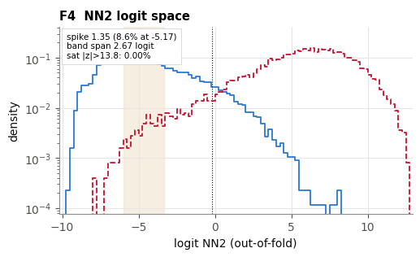

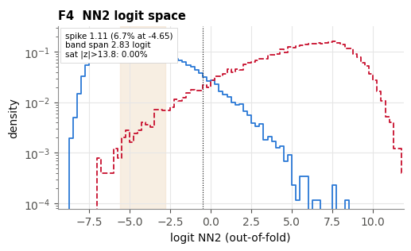
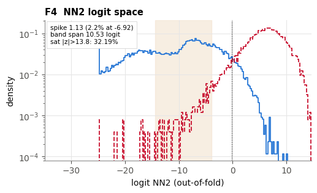